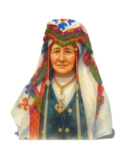
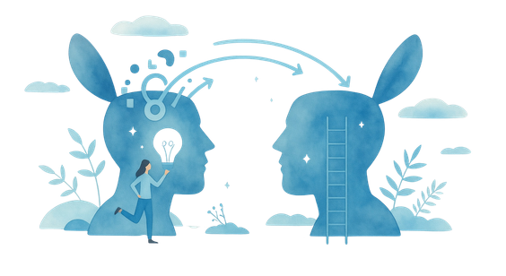
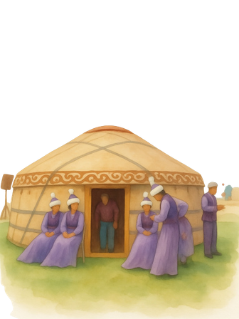

✨ Curated Study Sanctuary • Audited Edition
Breathe. Every mark on tomorrow’s paper lives right here.
Engineered for effortless recall: tap any speaker icon 🔊 to hear the broadcast-ready voiceover, toggle 🌿 Essentials Only if you want pure keywords, and check off cards ✓ as they lock into memory.
0 / 28 Mastered

1. Oral Custodianship
2. Living Transmission
3. Women's Domain

4. In-Situ SanctuaryThe 8 Conceptual Contrast Pairs
Every short conceptual question and essay theory paragraph draws from these 8 pairs.
The 10 High-Yield Case Dilemmas
Ranked by exam probability. Each card holds the exact case name, dollar figure, or legal outcome markers tick.
Scholars, Policies & Global Organisations
Attach a scholar or treaty name to every claim in your long essay to maximize rubric ticks.
The 8-Paragraph House Essay Skeleton
Built on the official INL270 Venezuela sample essay structure + the Bavikatte (2014) reflection finisher.